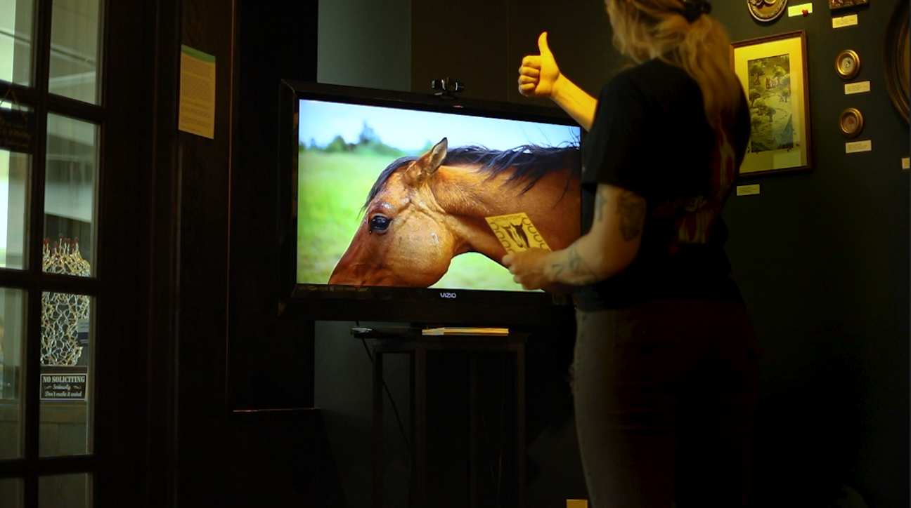

echoing emotions is an interactive project designed for people with no equine experience to gain understanding of how horse's express their emotions, and for experienced equestrians to dive deeper into their relationship with themelves and horses. what started as an educational idea turned into an exploration of how they mirror our emotions back to us and how they reflect their environments, including the emotions of all beings around them.

i filmed and edited the main looping video that plays until the software is triggered.
using mediapipe and opencv, i developed, tested, integrated, and debugged gesture tracking in python. by giving the webcam a thumbs up, it triggers the software to begin facial expression detection, which has a time out for cases of false triggering.

using deepface and opencv, i created facial expression detection for three main emotions: happy, sad, and angry. when one of these emotions is detected with reasonable confidence, a cooresponding video is played from an array of videos i filmed.
i created the instructions cards that were able to be taken home as a momento from the experience and the description of the exhibit. this exhibit was particularly close to my heart, as horses are.